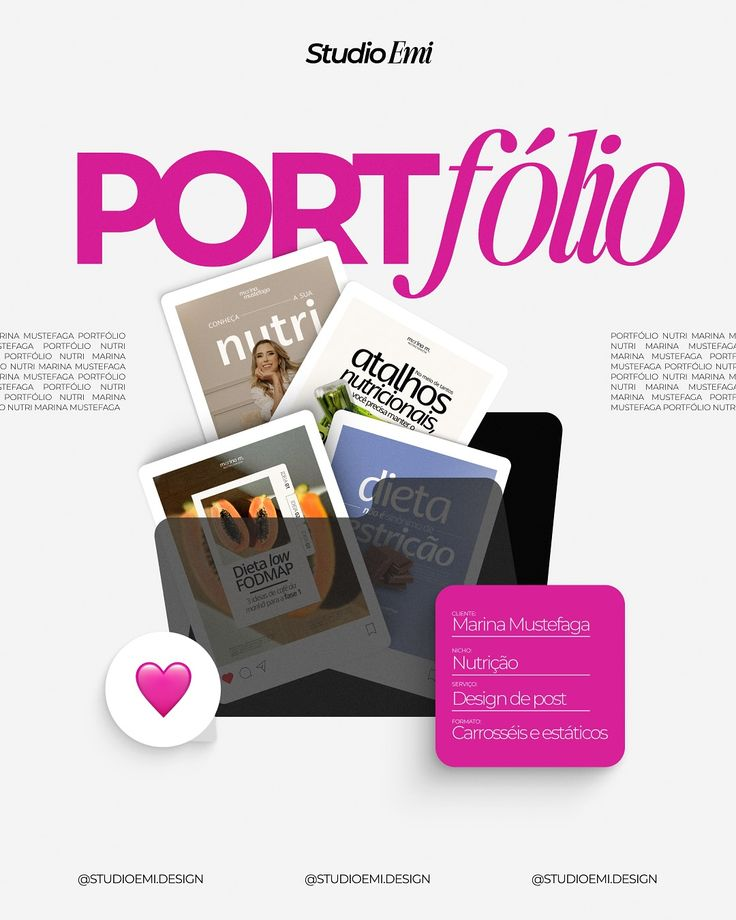

Personal Portfolio Website
Project Overview
Situs portofolio pribadi ini dikembangkan untuk merepresentasikan identitas dan kreativitas seorang mahasiswi melalui desain digital yang profesional. Tujuan utama proyek ini adalah menciptakan wadah online yang menampilkan karya, proyek, serta perjalanan akademik dengan tampilan yang estetis, modern, dan mudah diakses.
Research & Discovery
Dilakukan riset dan eksplorasi meliputi:
- Analisis beberapa website portofolio profesional untuk memahami struktur dan gaya visualnya
- Eksperimen warna dan tipografi agar sesuai dengan kepribadian pengguna
- Penelitian dasar tentang tren desain personal branding mahasiswa
Brand Identity Development
Menciptakan identitas merek holistik yang berfokus pada:
- Menerapkan layout minimalis dengan navigasi intuitif
- Menggunakan kombinasi HTML, CSS, dan JavaScript untuk desain responsif
- Fokus pada storytelling visual dan keseimbangan antara profesionalitas dan karakter pribadi
Key Outcomes
Strategi rebranding menghasilkan:
- Website portofolio aktif yang berfungsi sebagai representasi digital diri
- Meningkatkan kepercayaan diri dan personal branding online
- Mendapatkan apresiasi positif dari rekan mahasiswa dan dosen pembimbing
Project Gallery